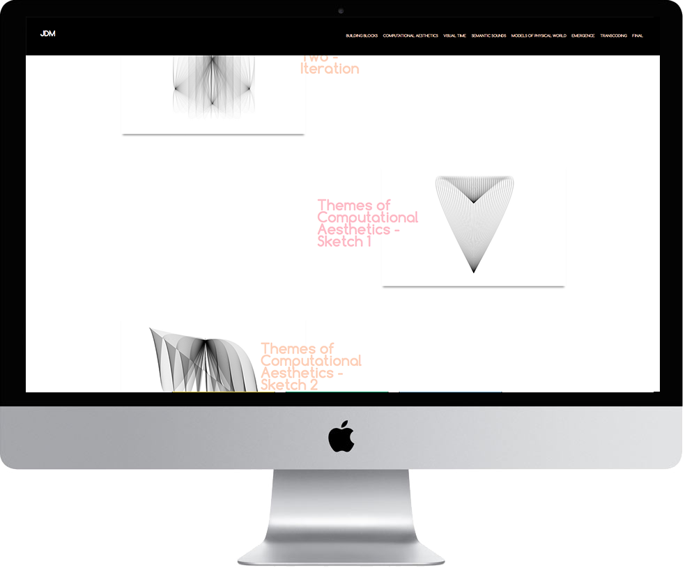

Experimental Interaction Portfolio
JavaScript/jQuery, Fall 2015
This website was created for the JavaScript/jQuery class final. The portfolio features excersies and assignments completed during the Summer 2015 class Experimental Interaction.
 View Project View Project
View Project